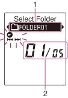
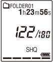
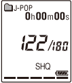

IC RecorderICD-PX333/PX333F
Display during FOLDER selection

Note
- The window shown above displays indications, numbers or items for explanatory purposes. The actual window may differ from those displayed here.
- Current folder
- Current file number/the total number of files in the folder
Structure of folders displayed in the display window of the IC recorder
The display of the structure of the folders seen in the display window of the IC recorder is different from that seen on the display of a computer.
The folder indicators in the display window of the IC recorder are as follows:
 : Folder for files recorded using the IC recorder
: Folder for files recorded using the IC recorder
 : Folder transferred from a computer (They are displayed when MP3 files have been transferred from a computer.)
: Folder transferred from a computer (They are displayed when MP3 files have been transferred from a computer.)
 : Folder for podcast files transferred from a computer (These folders are displayed when podcast files have been transferred from a computer.)
: Folder for podcast files transferred from a computer (These folders are displayed when podcast files have been transferred from a computer.)
Note
- If or folders have no files that can be played back using the IC recorder, those folders will not be displayed in the display window of the IC recorder. Even if folders have no files inside, however, those folders can be displayed.
Display of a file recorded with the IC recorder

Folders for files recorded using the IC recorder (folders under the VOICE folder) will be displayed.
Display of an MP3 file transferred from the computer

The following folders will be displayed among the folders forwarded from a computer.
- Folders under the MUSIC folder which contains a file (when some folders have multiple levels, all folders will be displayed in parallel.)
- Folders transferred to places other than under the MUSIC folder or the PODCASTS folder
- A folder called “No Folder” (If you transfer MP3 files separately, those files will be displayed under this folder.)
Display of a podcast file transferred from the computer
Folders for podcast files transferred from a computer will be displayed.
When you transfer podcast files from your computer to the IC recorder, use the supplied Sound Organizer software.